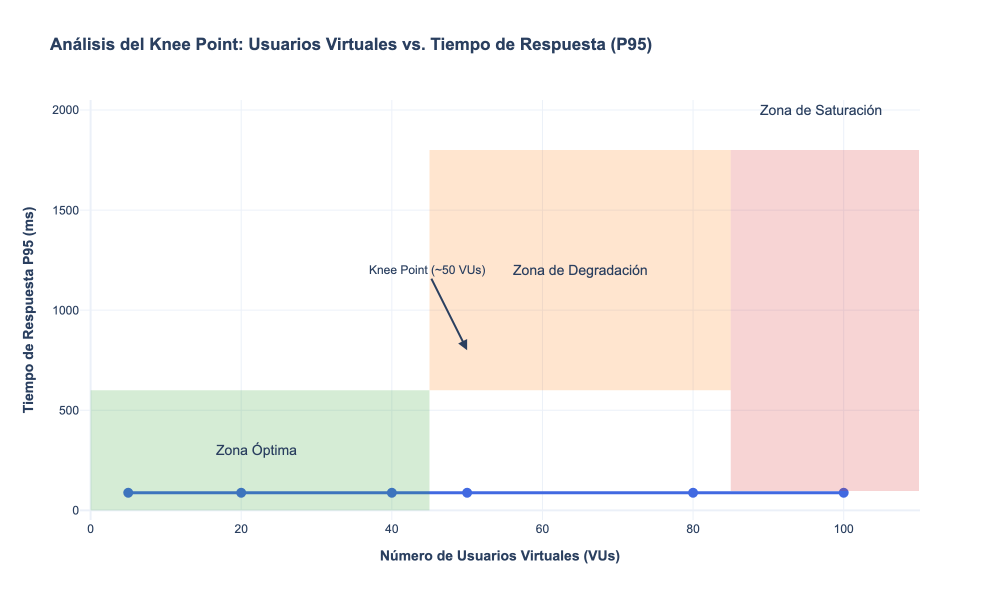

TUSSI
Distributed E-commerce Platform
Xamir Ernesto Rojas Gamboa
Juan Sebastian Medina Pinto
Juan Manuel Pérez Ordoñez
Description
Tussi is a distributed e-commerce platform built with modern microservices architecture that provides user authentication, product catalog management, and shopping cart functionality. The system is designed to handle high traffic loads through distributed services and uses modern web technologies for optimal performance and scalability.
3. Architectural Structure
A comprehensive view of system architecture through multiple perspectives.
Component-and-Connector View
A system comprising two clients, a load balancer, four services, and three databases, connected by ten connectors.
Components
| Component | Description |
|---|---|
| Web Client | Next.js/React app in browser |
| Mobile Client | React Native on iOS/Android |
| Load Balancer | Nginx with SSL termination, round-robin distribution |
| API Gateway | JWT, rate limiting, CORS, logging and health checks (4 replicas) |
| Auth Service | FastAPI (Python) with endpoints for register, login, me |
| Products API | FastAPI (Python) with endpoints for products listing and details |
| Cart API | Node.js/Express with cart operations endpoints |
| Auth Database | PostgreSQL on port 5432 for credentials and user data |
| Products Database | PostgreSQL on port 5433 for catalog and inventory |
| Cart Database | MongoDB on port 27017 for sessions and cart data |
Connectors
| Connector | Type | From | To |
|---|---|---|---|
| c1 | HTTPS/HTTP | Web Client | Load Balancer |
| c2 | HTTPS/HTTP | Mobile Client | Load Balancer |
| c3 | HTTP (Load Balancing) | Load Balancer | API Gateway |
| c4 | HTTP (REST) | API Gateway | Auth Service |
| c5 | HTTP (REST) | API Gateway | Products API |
| c6 | HTTP (REST) | API Gateway | Cart API |
| c7 | TCP (PostgreSQL driver) | Auth Service | Auth Database |
| c8 | TCP (PostgreSQL driver) | Products API | Products Database |
| c9 | TCP (MongoDB driver) | Cart API | Cart Database |
| c10 | HTTPS/HTTP (Testing) | K6 Load Testing | Load Balancer |
Layered (Tier & Layer) View
A structured view showing the system's layered architecture and responsibilities.
Deployment Structure
Container orchestration pattern with Docker Compose, network segmentation, and load balancing for high availability.
Decomposition Structure
A modular breakdown of system functionalities and their relationships.

4. Quality Properties
Critical security and performance scenarios demonstrating system quality attributes.
Security Scenarios - Man in the Middle Attack
Protection against data interception through SSL/TLS encryption.
| Part | Detail |
|---|---|
| Stimulus | An attempt to intercept and read HTTP traffic between a client and the API Gateway. |
| Source of stimulus | An external attacker with access to the network path. |
| Artifact | The communication channel between the client and the Load Balancer/API Gateway, secured with TLS/SSL. |
| Environment | A user is accessing the application from an untrusted public network. |
| Response | The system enforces HTTPS-only communication. All data in transit is encrypted via TLS, rendering any intercepted traffic unreadable to the attacker. |
| Response metric | Data confidentiality and integrity are preserved. The percentage of non-encrypted connections should be 0%. Attempts to connect via HTTP are automatically rejected or upgraded. |
Security Scenarios - API Gateway Bypass
Prevention of direct microservice access through reverse proxy pattern.
| Part | Detail |
|---|---|
| Stimulus | A crafted HTTP request is sent directly to the internal IP or hostname of a backend microservice. |
| Source of stimulus | An external attacker or a compromised, non-critical external-facing service. |
| Artifact | The API Gateway, which serves as the single entry point, and the network configuration that isolates backend services. |
| Environment | Production. Backend services are running in a private network, inaccessible from the public internet. |
| Response | The request fails because the private network is not exposed. The API Gateway is the only component listening for external traffic, and it validates, authenticates, and sanitizes all requests before forwarding them. |
| Response metric | The attack surface is minimized by exposing only one entry point. The number of directly accessible internal service endpoints from an external source is zero. |
Security Scenarios - Network Segmentation
Isolation of critical components through network segmentation.
| Part | Detail |
|---|---|
| Stimulus | A connection attempt is made from the compromised frontend container to the auth-db container on its internal port (5432). |
| Source of stimulus | An attacker who has gained remote code execution within the frontend container. |
| Artifact | The Docker network configuration in docker-compose.yml, which defines two distinct networks: public for external-facing services and private (with internal: true) for the backend and databases. |
| Environment | Production Docker deployment. The frontend container is connected only to the public network, while the auth-db is exclusively on the private network. |
| Response | The connection attempt from frontend to auth-db is blocked at the Docker network layer. Because the containers do not share a common network and the private network is isolated, no route exists between them. |
| Response metric | Lateral movement from the presentation tier to the data tier is prevented. The number of unauthorized network paths between the public and private networks is zero. |
Security Scenarios - Event Sourcing
Audit trail for critical data modifications.
| Part | Detail |
|---|---|
| Stimulus | Price of a high-value product is changed to a very low amount and later restored. |
| Source of stimulus | Administrator with a legitimate account (no sign of compromise). |
| Artifact | products-api service and products-db database. |
| Environment | Production, normal business operations. |
| Response | The system must immutably log every price change, including user, previous value, new value, and timestamp. |
| Response metric | Ability to generate a complete change history; prove that the price changed from X to Y and then from Y to X, with no possibility of tampering. |
Performance Scenarios - Replication
Handling API Gateway instance failures through replication.
| Part | Detail |
|---|---|
| Stimulus | The primary API Gateway instance fails, and the system needs to ensure uninterrupted service. |
| Source of stimulus | A hardware failure or a software bug in the primary instance. |
| Artifact | The API Gateway service, its configuration, and the load balancer's health check. |
| Environment | Production. High availability is a critical requirement. |
| Response | The system automatically detects the failure, marks the primary instance as unhealthy, and routes traffic to a healthy secondary instance. The load balancer continuously monitors the health of all API Gateway instances. |
| Response metric | Zero downtime for the API Gateway service. The percentage of failed requests to the API Gateway should be minimal. |
Performance Scenarios - Load Balancer
Managing increased concurrent users through load balancing.
| Part | Detail |
|---|---|
| Stimulus | A sudden surge in traffic due to a marketing campaign or a popular product launch. |
| Source of stimulus | External users accessing the application simultaneously. |
| Artifact | The load balancer, its configuration, and the API Gateway's ability to handle concurrent requests. |
| Environment | Production. Scalability is a key requirement. |
| Response | The load balancer distributes incoming requests across multiple API Gateway instances, ensuring that no single instance is overwhelmed. It also manages session persistence and sticky sessions if necessary. |
| Response metric | The average response time for API Gateway requests remains stable, and no requests are dropped or timed out. |
Performance Scenarios - DOS Protection
Protection against denial of service attacks through rate limiting.
| Part | Detail |
|---|---|
| Stimulus | A malicious actor attempts to flood the API Gateway with a large number of requests, exceeding its capacity. |
| Source of stimulus | An external attacker using automated tools or a botnet. |
| Artifact | The API Gateway's rate limiting configuration, its ability to detect and block suspicious requests, and the load balancer's ability to route legitimate traffic. |
| Environment | Production. Availability and reliability are paramount. |
| Response | The API Gateway and load balancer work together to block the overwhelming requests. The rate limiter prevents the system from being overwhelmed by legitimate traffic, while the load balancer ensures that the remaining requests are distributed evenly. |
| Response metric | The system remains responsive and available, with minimal impact on user experience. |
Performance Scenarios - Database Bottleneck
Managing database bottlenecks through Command Query Responsibility Segregation.
| Part | Detail |
|---|---|
| Stimulus | A high-volume read operation (e.g., fetching product details) is performed on the products-db database. |
| Source of stimulus | A user browsing the product catalog. |
| Artifact | The products-api service and products-db database, configured for read-heavy workloads. |
| Environment | Production. Scalability and performance are critical. |
| Response | The read operation is routed to a dedicated read replica, which handles the majority of read requests. The primary database handles write operations and complex queries. |
| Response metric | Fast response times for read operations, with minimal impact on write performance. |
5. Reliability Scenarios
Patterns and strategies ensuring system reliability and availability.
Replication Pattern
By default, GKE does not do "synchronous replication" of its nodes, but manages the node pools as Compute Engine's Managed Instance Groups (MIGs) and maintains the desired state using an eventual-consistent model.
Active Redundancy (Hot Spare) Pattern
Hot spare implementation for immediate failover capability.
| Part | Detail |
|---|---|
| Stimulus | The primary pod/node serving live traffic fails its liveness probe due to a hardware or software fault. |
| Source of stimulus | An internal system event (e.g., node failure, pod crash). |
| Artifact | The Kubernetes Deployment with multiple replicas, a Service object for load balancing, and liveness/readiness probes. |
| Environment | A GKE cluster under normal operation. Replicas are running in a "hot" state, actively processing data in parallel. |
| Response | Kubernetes detects the failed probe and immediately stops sending traffic to the failed pod. The Service automatically reroutes new requests to one of the healthy "hot spare" pods, which already has the latest state. Kubernetes then initiates the process of replacing the failed pod. |
| Response metric | The failover is transparent to the client. The time to detect failure and reroute traffic is under 500ms. There is zero data loss since the spare was already synchronized. |
Passive Redundancy (Warm Spare) Pattern
Warm spare implementation for cost-effective backup capability.
| Part | Detail |
|---|---|
| Stimulus | An external monitoring system detects that the primary service is completely unavailable (e.g., all primary pods are failing). |
| Source of stimulus | A major failure in the primary service's node pool or a critical bug affecting all primary replicas. |
| Artifact | A separate Kubernetes Deployment for the "warm spare" replica, node taints/tolerations to keep it isolated, and an operational runbook or automated script to trigger the promotion. |
| Environment | Production. The primary service is handling all traffic, while the warm spare is running but not receiving production requests. |
| Response | An operator or an automated system is alerted. The promotion process is initiated: the NoSchedule taint is removed from the standby node pool, or the Service selector is updated to include the warm spare. The spare begins receiving traffic. |
| Response metric | The Recovery Time Objective (RTO) is met (e.g., service is restored in under 2 minutes). Data loss is minimal to none, as the warm spare was synchronizing state. |
Service Discovery Pattern
In GKE's VPC-native networking, each node automatically receives an alias IP range from the secondary subnet and each pod is assigned an IP from that block. When autoscaling adds new nodes, the control plane reserves a fresh alias IP range, updates the network routes, and pods can be scheduled immediately with new IPs.
| Part | Detail |
|---|---|
| Stimulus | The API Gateway needs to send a request to the Products service and uses its logical name, http://products-api, to establish a connection. |
| Source of stimulus | An internal application component (API Gateway) making a routine service-to-service call. |
| Artifact | The Kubernetes internal DNS service (CoreDNS), which maintains mappings between service names and their corresponding ClusterIPs. |
| Environment | A running GKE cluster where services are defined via Kubernetes Service objects. |
| Response | The API Gateway's DNS resolver queries CoreDNS. CoreDNS resolves the name products-api to its stable ClusterIP. Kubernetes then uses iptables or IPVS to forward the request to one of the healthy backend pods for the service. |
| Response metric | The service name is successfully and correctly resolved to an IP address. DNS lookup latency is negligible (e.g., <10ms). The connection to the service is established successfully. |
Cluster Pattern
Coordinated service management for high availability.
| Part | Detail |
|---|---|
| Stimulus | A Compute Engine VM acting as a GKE node becomes unresponsive and fails its health checks. |
| Source of stimulus | An underlying hardware failure, OS-level corruption, or other critical issue within the VM. |
| Artifact | The GKE node pool, which is backed by a Compute Engine Managed Instance Group (MIG) configured with auto-healing policies. |
| Environment | A production GKE cluster. |
| Response | The MIG's health checker detects the unhealthy node. It automatically triggers the auto-healing process: the faulty VM is terminated, and a new, identical VM is created to replace it. The new node joins the GKE cluster, and Kubernetes begins scheduling pods onto it. |
| Response metric | The cluster's capacity is automatically restored without any manual intervention. The time to provision and register the new node is within the expected range (typically a few minutes). Workload disruption is minimized as Kubernetes reschedules pods that were on the failed node. |
Transaction Pattern
Ensuring data consistency across distributed operations.
| Part | Detail |
|---|---|
| Stimulus | A user is completing a checkout. The system successfully deducts an item from the products-api inventory, but the subsequent call to the payment processing service fails. |
| Source of stimulus | A failure in a downstream service (payment processor) or a network timeout. |
| Artifact | The cart-api checkout logic, which orchestrates calls to multiple services (products-api, payment service). It must include error handling and the logic for the compensating action. |
| Environment | Production, during a multi-step, distributed transaction (Saga). |
| Response | The cart-api, upon detecting the payment failure, invokes a compensating transaction. It sends a specific request to the products-api (e.g., POST /api/products/{id}/add-stock) to add the previously deducted item back into inventory, effectively reversing the initial operation. |
| Response metric | The system's data is restored to a consistent state. The product inventory is corrected. The user is notified of the payment failure, but the system does not remain in an inconsistent state (e.g., item sold but no payment received). |
14. Performance Analysis
Comprehensive analysis of system performance under various conditions.
Test Environment Configuration
| Component | Specification |
|---|---|
| CPU | Apple M4 (10 cores) |
| RAM | 24 GB |
| Storage | 512 GB SSD |
| Network | 60 Mbps bandwidth |
Performance Results
| Metric | Overall Result | Read Scenario | Creation Scenario |
|---|---|---|---|
| Total Requests | 18,563 | 14,303 | 4,260 |
| Failed Requests | 0.67% (126) | 0.55% (80) | 1.08% (46) |
| P95 Duration | 87.79 ms | 77.26 ms | 118.03 ms |
System Behavior Analysis
Thank You
Team 1a - Software Architecture Project
Xamir Ernesto Rojas Gamboa | Juan Sebastian Medina Pinto | Juan Manuel Pérez Ordoñez